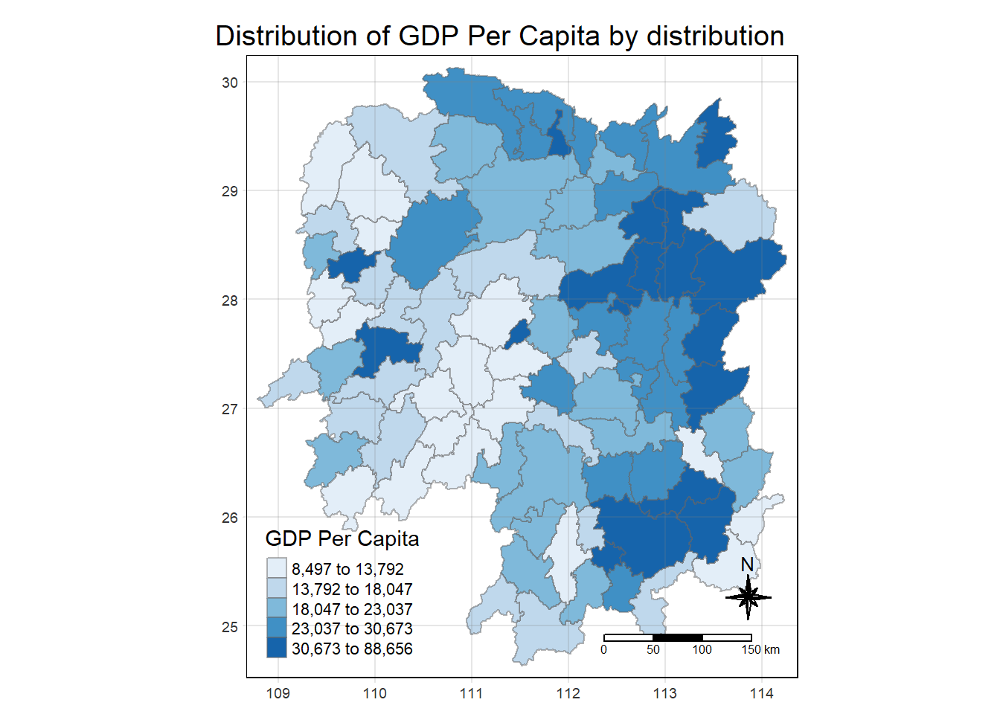

In-class Exercise 6: Spatial Weights and Applications
1 Goals
- Learn how to compute spatial weights
2 Datasets
- Hunan county boundary layer: This is a geospatial data set in ESRI shapefile format.
- Hunan_2012.csv: This csv file contains selected Hunan’s local development indicators in 2012.
3 R Packages
4 Import Data
4.1 Hunan County Boundaries
Reading layer `Hunan' from data source
`C:\deadline2359\IS415-GAA\In-class_Ex\In-class_Ex06\data\geospatial'
using driver `ESRI Shapefile'
Simple feature collection with 88 features and 7 fields
Geometry type: POLYGON
Dimension: XY
Bounding box: xmin: 108.7831 ymin: 24.6342 xmax: 114.2544 ymax: 30.12812
Geodetic CRS: WGS 84Simple feature collection with 5 features and 7 fields
Geometry type: POLYGON
Dimension: XY
Bounding box: xmin: 111.2145 ymin: 28.61762 xmax: 112.3013 ymax: 29.95847
Geodetic CRS: WGS 84
NAME_2 ID_3 NAME_3 ENGTYPE_3 Shape_Leng Shape_Area County
1 Changde 21098 Anxiang County 1.869074 0.10056190 Anxiang
2 Changde 21100 Hanshou County 2.360691 0.19978745 Hanshou
3 Changde 21101 Jinshi County City 1.425620 0.05302413 Jinshi
4 Changde 21102 Li County 3.474325 0.18908121 Li
5 Changde 21103 Linli County 2.289506 0.11450357 Linli
geometry
1 POLYGON ((112.0625 29.75523...
2 POLYGON ((112.2288 29.11684...
3 POLYGON ((111.8927 29.6013,...
4 POLYGON ((111.3731 29.94649...
5 POLYGON ((111.6324 29.76288...4.2 Hunan’s Local Development Indicators (2012)
# A tibble: 5 × 29
County City avg_w…¹ depos…² FAI Gov_Rev Gov_Exp GDP GDPPC GIO Loan
<chr> <chr> <dbl> <dbl> <dbl> <dbl> <dbl> <dbl> <dbl> <dbl> <dbl>
1 Anhua Yiyang 30544 10967 6832. 457. 2703 13225 14567 9277. 3955.
2 Anren Chenzh… 28058 4599. 6386. 221. 1455. 4941. 12761 4189. 2555.
3 Anxiang Changde 31935 5517. 3541 244. 1780. 12482 23667 5109. 2807.
4 Baojing Hunan … 30843 2250 1005. 193. 1379. 4088. 14563 3624. 1254.
5 Chaling Zhuzhou 31251 8241. 6508. 620. 1947 11585 20078 9158. 4287.
# … with 18 more variables: NIPCR <dbl>, Bed <dbl>, Emp <dbl>, EmpR <dbl>,
# EmpRT <dbl>, Pri_Stu <dbl>, Sec_Stu <dbl>, Household <dbl>,
# Household_R <dbl>, NOIP <dbl>, Pop_R <dbl>, RSCG <dbl>, Pop_T <dbl>,
# Agri <dbl>, Service <dbl>, Disp_Inc <dbl>, RORP <dbl>, ROREmp <dbl>, and
# abbreviated variable names ¹avg_wage, ²deposite4.3 Performing Relational Join
Update the attribute table of hunan’s SpatialPolygonsDataFrame with the attribute fields of hunan2012 dataframe. This is performed by using left_join() of dplyr package.
Simple feature collection with 5 features and 6 fields
Geometry type: POLYGON
Dimension: XY
Bounding box: xmin: 111.2145 ymin: 28.61762 xmax: 112.3013 ymax: 29.95847
Geodetic CRS: WGS 84
NAME_2 ID_3 NAME_3 ENGTYPE_3 County GDPPC
1 Changde 21098 Anxiang County Anxiang 23667
2 Changde 21100 Hanshou County Hanshou 20981
3 Changde 21101 Jinshi County City Jinshi 34592
4 Changde 21102 Li County Li 24473
5 Changde 21103 Linli County Linli 25554
geometry
1 POLYGON ((112.0625 29.75523...
2 POLYGON ((112.2288 29.11684...
3 POLYGON ((111.8927 29.6013,...
4 POLYGON ((111.3731 29.94649...
5 POLYGON ((111.6324 29.76288...In order to retain the geospatial properties, the left dataframe must be a sf dataframe (i.e., hunan in our case)
In addition, left_join() does not allow joining columns where their names are of different cases.
5 Visualising Regional Development Indicator
Now, we will create a choropleth map showing the distribution of GDPPC 2012.
tm_shape(hunan_GDPPC) +
tm_fill("GDPPC",
style = "quantile",
palette = "Blues",
title = "GDP Per Capita") +
tm_layout(main.title = "Distribution of GDP Per Capita by distribution",
main.title.position = "center",
main.title.size = 1.2,
legend.height = 0.45,
legend.width = 0.35,
frame = TRUE) +
tm_borders(alpha = 0.5) +
tm_compass(type = "8star", size = 2) +
tm_scale_bar() +
tm_grid(alpha = 0.2)

6 Computing Contiguity Spatial Weights
st_contiguity() is used to derive a contiguity neighoubour list. st_contiguity() wraps poly2nb() in spdep.
It will create a new column “nb” (i.e., neighbours). Each row will contain a list for areas adjacent to a region.
st_weights() then using nb to create a list of weights.
wm_queen <- hunan_GDPPC %>%
mutate(nb = st_contiguity(geometry),
wt = st_weights(nb),
.before = 1) # put it as the first column
head(wm_queen, 5)Simple feature collection with 5 features and 8 fields
Geometry type: POLYGON
Dimension: XY
Bounding box: xmin: 111.2145 ymin: 28.61762 xmax: 112.3013 ymax: 29.95847
Geodetic CRS: WGS 84
nb wt NAME_2 ID_3 NAME_3 ENGTYPE_3
1 2, 3, 4, 57, 85 0.2, 0.2, 0.2, 0.2, 0.2 Changde 21098 Anxiang County
2 1, 57, 58, 78, 85 0.2, 0.2, 0.2, 0.2, 0.2 Changde 21100 Hanshou County
3 1, 4, 5, 85 0.25, 0.25, 0.25, 0.25 Changde 21101 Jinshi County City
4 1, 3, 5, 6 0.25, 0.25, 0.25, 0.25 Changde 21102 Li County
5 3, 4, 6, 85 0.25, 0.25, 0.25, 0.25 Changde 21103 Linli County
County GDPPC geometry
1 Anxiang 23667 POLYGON ((112.0625 29.75523...
2 Hanshou 20981 POLYGON ((112.2288 29.11684...
3 Jinshi 34592 POLYGON ((111.8927 29.6013,...
4 Li 24473 POLYGON ((111.3731 29.94649...
5 Linli 25554 POLYGON ((111.6324 29.76288...Include the parameter queen = FALSE to change to rook’s method.
cn_rook <- hunan_GDPPC %>%
mutate(nb = st_contiguity(geometry),
wt = st_weights(nb),
queen = FALSE,
.before = 1)
head(cn_rook, 5)Simple feature collection with 5 features and 9 fields
Geometry type: POLYGON
Dimension: XY
Bounding box: xmin: 111.2145 ymin: 28.61762 xmax: 112.3013 ymax: 29.95847
Geodetic CRS: WGS 84
nb wt queen NAME_2 ID_3 NAME_3
1 2, 3, 4, 57, 85 0.2, 0.2, 0.2, 0.2, 0.2 FALSE Changde 21098 Anxiang
2 1, 57, 58, 78, 85 0.2, 0.2, 0.2, 0.2, 0.2 FALSE Changde 21100 Hanshou
3 1, 4, 5, 85 0.25, 0.25, 0.25, 0.25 FALSE Changde 21101 Jinshi
4 1, 3, 5, 6 0.25, 0.25, 0.25, 0.25 FALSE Changde 21102 Li
5 3, 4, 6, 85 0.25, 0.25, 0.25, 0.25 FALSE Changde 21103 Linli
ENGTYPE_3 County GDPPC geometry
1 County Anxiang 23667 POLYGON ((112.0625 29.75523...
2 County Hanshou 20981 POLYGON ((112.2288 29.11684...
3 County City Jinshi 34592 POLYGON ((111.8927 29.6013,...
4 County Li 24473 POLYGON ((111.3731 29.94649...
5 County Linli 25554 POLYGON ((111.6324 29.76288...